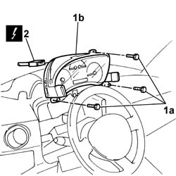

5560B11 analogue control panel - r+r or replace
- Path
- Procedures > 55 ELECTRICAL EQUIPMENT > 5560 INSTRUMENT PANEL > 5560B analogue control panel > 5560B11 analogue control panel - r+r or replace
- Kind
- repair procedure (removal / refitting; the operation number is the code)
- Applies to
- all engines; all production periods
- Interactive page
- https://sloeber94.github.io/elrnDB-fDbl/en/#/2584963
Applies to: all engines; all production periods
 Removing
Removing
 Refitting
RefittingDisconnect the battery negative terminal.
Op. 7040A26 STEERING COLUMN TRIM - R+R
Op. 7040A11 CONTROL PANEL LID - R + R
1. Undo the retaining bolts (1a) and remove the instrument panel (1b) from its housing.
2. Disconnect the electrical connector.
Name | Connector | |
|---|---|---|
2 | Instrument panel |

Applies to: all engines; all production periods
Refitting
RemovingConnect the electrical connector and fit the instrument panel in its seating.
 | Name | Connector |
|---|---|---|
- | Instrument panel |
Tighten the retaining bolts.
Op. 7040A11 CONTROL PANEL LID - R + R
Op. 7040A26 STEERING COLUMN TRIM - R+R
Connect the battery negative terminal.
Topics linked from this page (3)
Topics that link to this page (16)
- I80 HEADLAMP ALIGNMENT CORRECTOR NOT WORKING
- K03 SPEEDOMETER NOT WORKING
- K06 TRIP METER DOES NOT ZERO
- K15 CLOCK NOT WORKING
- K20 FUEL LEVEL GAUGE NOT WORKING
- K21 FUEL RESERVE WARNING LIGHT NOT WORKING
- K25 ENGINE COOLANT TEMPERATURE GAUGE NOT WORKING
- K26 ENGINE COOLANT OVERHEATING WARNING LIGHT NOT WORKING
- K28 ENGINE COOLANT TEMPERATURE SIGNALLED BY INSTRUMENT TOO LOW
- K30 MINIMUM ENGINE OIL PRESSURE WARNING LIGHT NOT WORKING
- K40 BATTERY CHARGING WARNING LIGHT NOT WORKING
- K65 BRAKE FLUID WARNING LIGHT DOES NOT COME ON
- K66 WARNING LIGHT SIGNALLING HANDBRAKE APPLIED DOES NOT COME ON
- K90 INSTRUMENT LIGHTS / NOT WORKING
- R02 AIRBAG FAILURE WARNING LIGHT OFF / (DO NOT CARRY OUT INITIAL TEST)
- S61 DASHBOARD CREAKING